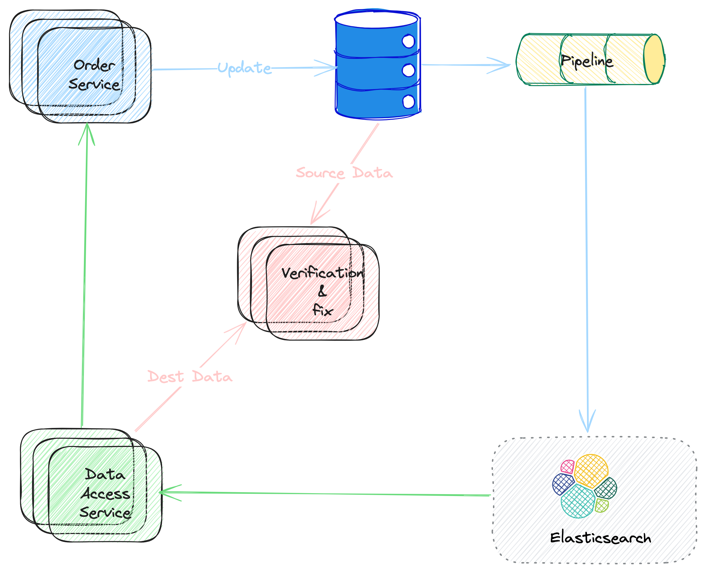

A Secondary Heterogeneous Data Service
Concept
In this section, I will introduce a Secondary Heterogeneous Data Service with the E-commerce scenario. The key meaning of key words as follows:
- Secondary means the data stored by the service is not the MAIN data. For example, the data of the main business service may be stored by MySQL database, but for some dedicated purpose, we may need to store the secondary copy of data somewhere.
- Heterogeneous means the structure of the data (depending on the purpose of the service) is DIFFERENT from the main data. For example, the main data is stored by MySQL, but the 2nd copy is stored by ElasticSearch or other engines.
Key Problems
We can get the key points at the first glance to this concept,
- The data sync mechanism between the main and the secondary copy.
- The data consistency between the two copies. And,
- How to store and query the second copy.
In this series of posters, let's talk about each of them, and the solutions of course.
A Real World Example
First, let's look at an example from the real world.
Background
In the real world, MySQL is widely used as data store for e-commerce scenarios. And as the data scale growing, there would be new problems on our way. For example,
- As data scale growing, a common solution is to shard the data (we would talk about the data sharding in other series). For example, the
orderdata maybe sharded byorder_id. This works fine when query withorder_id, for example, query the details of one order. But what if, we need to list all the order for one specific user? - Usually, to improve the performance of data query, we need to setup some secondary indexes, but not too many. That's because too many indexes would impact the write performance. So, we need to think about carefully on which columns to involve the secondary indexes. Beside that, it impacts the online performance heavily also when adding/updating/deleting secondary indexes. But what if we really need this when there is a new business scenario?
- Sometimes we may need some data aggregations based on the main data. One way is to do the aggregation on querying, and another way is just to record the aggregated somewhere. When query latency is required to be low, we may need to use the latter one solution. And the aggregation rules maybe changed from time to time (This is actually OLAP scenario). Definitely, we should NOT use this main storage for this.
Solution
The illustration of a possible solution as follows.
The
Order Serviceis the user side to this data service. And typically, it updates the data to the main data store.The blue narrows stands for the data sync, which is asynchronous in the solution. Usually, some other components (
Kafkaas queue, for example) is are involved to make the system more functional and reliable. And this example,ElasticSearchis used for the secondary store. It depends on the business scenario what storage should be used for the secondary store.The green narrows stands for the data query flow.
The pink narrows illustrate the data consistency verification & fixing flow. This workflow is to handle the data consistency problem mentioned above.
In the following articles, let's talk about the details of each part.
Picture 1. Solution Architecture
